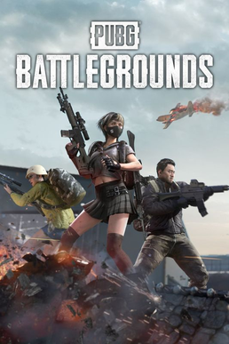
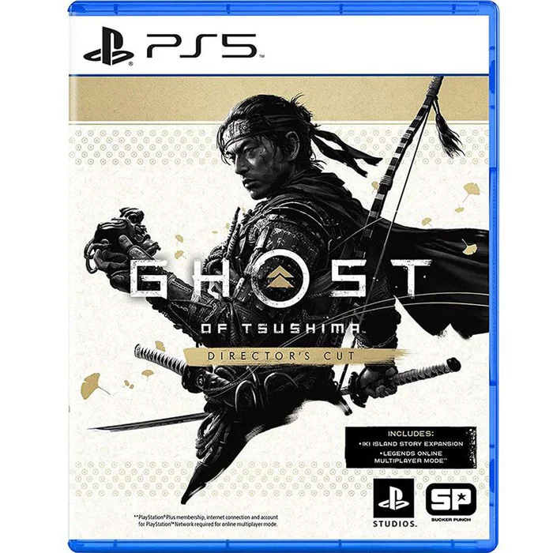
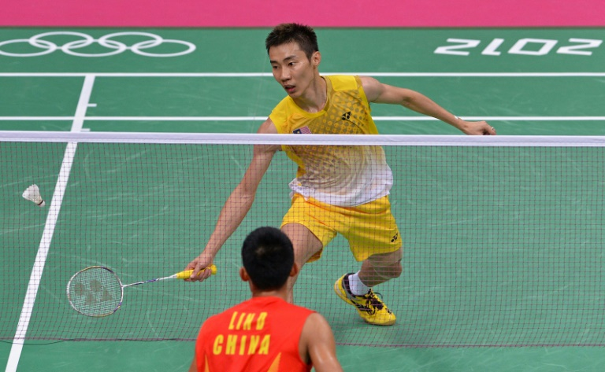

I really enjoy playing video games in my free time. It's a great way to relax and unwind after a long day of studying.
Some of my favorite multiplayer games:
Rocket League
League of Legends
PUBG

Justine's favorite multiplayer games are Rocket League, League of Legends, and PUBG. *I hope you don't extrapolate his personality based from these games.*
Some of my favorite singleplayer games:
Ghost of Tsushima
Terraria
My was situationship

Justine's favorite singleplayer games are Ghost of Tsushima, Terraria, and the late night games with her.
Hobby #2: Watching Shows
I also enjoy watching video media such as TV series, movies, animes, documentaries, mostly anime, but I do watch other types of shows too.
Some of my favorite shows right now:
Oregairu
Konosuba
We are all trying here
Justine's favorite shows right now are Oregairu, Konosuba, and We are all trying here.
Some of my favorite movies:
I want to eat your pancreas
Kiki's delivery service
18x2 Beyond Youthful days
Hobby #3: Sports
I also like to play sports, especially badminton and pickleball.
Badminton

I started playing badminton in the pandemic. Grown to love it, then I started college in 2023 and still seeking time to play it. When Badminton Society got approved for 2024, I was so thrilled, and I couldn't be more excited! I met a lot of people from various colleges because of the weekly plays in there.
Pickleball
I got introduced to pickleball by my friend's family in 2023. Didn't really click with me at first since the sport is less thrilling than badminton. Plus, the abundance of elderly people playing in our home court made me feel a bit disconnected from the sport.
Then I took PETHREE, took the chance to play pickleball there since I am already familiar with it, but since the players are in an age group similar to mine, I just found myself making lot's of friends during my time of taking PETHREE.